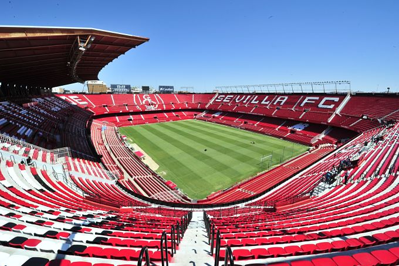

futebol espanhol fundado em 25 de janeiro de 1890, na cidade de Sevilha.

Europa League
Supercopa Europeia
Liga Espanhola
Copa del Rey
Sergio Rico
Mariano
Sergio Escudero
Carlos Fern�ndez
Joaqu�n Correa
| Hist�ria do Time | Est�dio | Escudo do time | T�tulos | Jogadores, Titulares e Reservas | O Sevilla F�tbol Club � um clube de futebol espanhol fundado em 25 de janeiro de 1890, na cidade de Sevilha. |
 | |
Europa League Supercopa Europeia Liga Espanhola Copa del Rey |
Sergio Rico Mariano Sergio Escudero Carlos Fern�ndez Joaqu�n Correa |